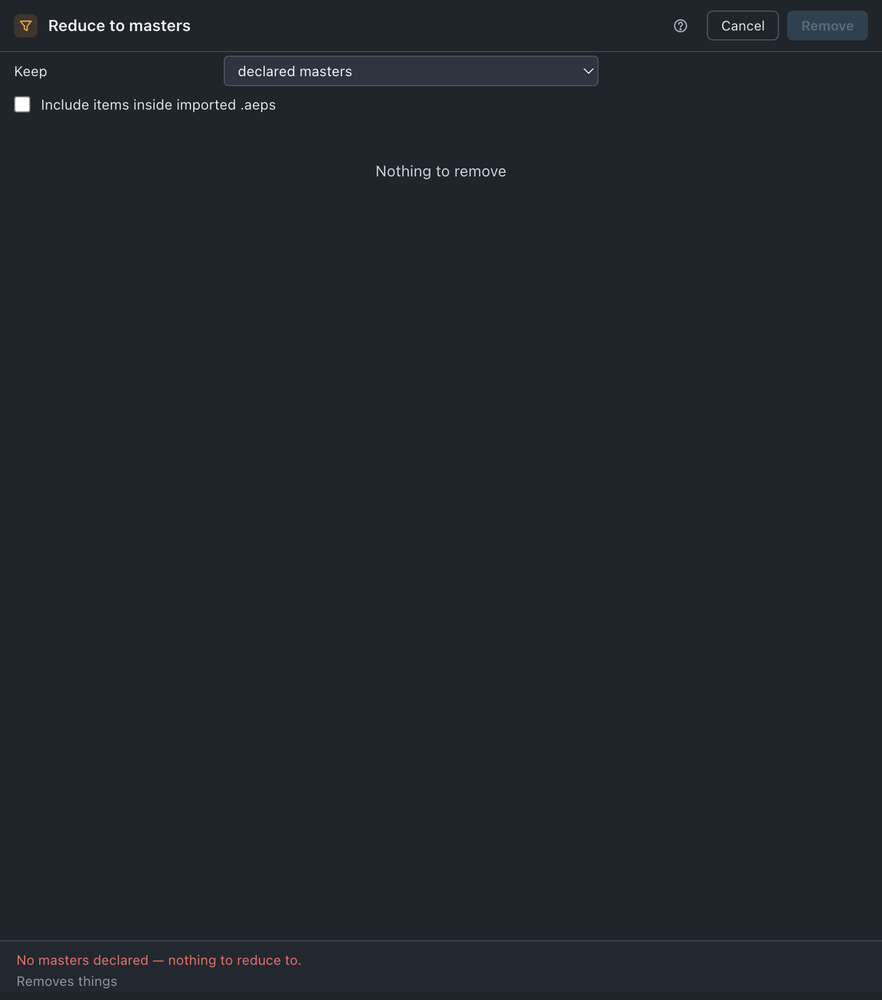

Reduce
Keeps your masters — or the comps you picked — and everything they use, and removes the rest. After Effects' Reduce Project, except it can read expressions.
Use it when
- A delivery is going out and the project should hold that one master and nothing else.
- You want a version of the job cut down to three comps before you hand it to someone.
- The project has grown a second and third idea beside the one that shipped.
- After Effects' own File › Reduce Project has broken a comp that only an expression reached.
What it does
Takes a set of comps to keep, walks everything they use — layers, sources, precomps, proxies, and anything an expression names — and removes every item outside that set. The comps to keep are your declared masters by default, or the comps you have selected in the Project panel if you switch Keep over. Protected items seed the walk too, so what they use survives with them. It is one ⌘Z.
What it does not do: it does not move or file anything (Organize does), it does not touch files on disk, and it does not decide anything for you when there is nothing to reduce to — with no masters and no selection it refuses and says so.
Do it
- Declare your masters first — Set up each project — unless you mean to keep a hand-picked selection instead.
- Press Reduce. The first press reads the expression corpus, so the tile says reading… for a moment.
- Read the Keep row before anything else. It is the one control that decides the whole run.
- Read the note: Keeping n declared masters and everything they use. — or the selected-comps wording. Then read the Removes list.
- Press Remove n.
Scope. The whole project, always. There is no selection scope here and that is deliberate: a selection scope promises not to touch what is outside it, and touching what is outside it is this tool's entire job. Picking comps is an option — Keep — not a scope.

What you'll see
| Option | What it means |
|---|---|
| Keep | declared masters (default) or the comps I have selected. This is what survives. Everything else goes. |
| Include items inside imported .aeps | Off by default. On, items that came in with an imported .aep are removed too if nothing kept reaches them. Off, that subtree is left standing. |
Notes it may raise, and what they mean:
- Keeping n declared masters and everything they use. — the run as it stands.
- Keeping n selected comps and everything they use. — same, with Keep switched over.
- No masters declared — nothing to reduce to. — nothing is proposed. Declare masters, or switch Keep to your selection.
- No comps selected — select the comps to keep, or switch to the whole project. — Keep is set to the selection and the selection holds no comps.
Undo
One ⌘Z, deletes included. Nothing on disk changes.
Watch out
Things you might not think to do
- Cut a delivery down to one master before handing it over. Declare the one master, run it, Save As.
- Keep exactly the three comps you highlighted. Select them, switch Keep to the comps I have selected.
- Reduce a version of the job rather than the job. Save As first. Reduce acts on the project you have open, not on a copy — Collect is the one that reduces a copy.
Pairs with
Unused, which answers the opposite question: remove what nothing points at, rather than keep what these comps reach. Collect already reduces the copy it writes, so run Reduce first only when you want your own project reduced too. Empty folders after, for the shells left behind.